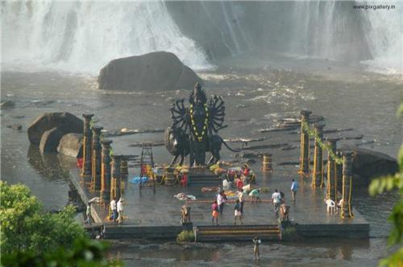
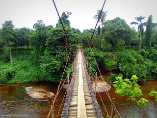
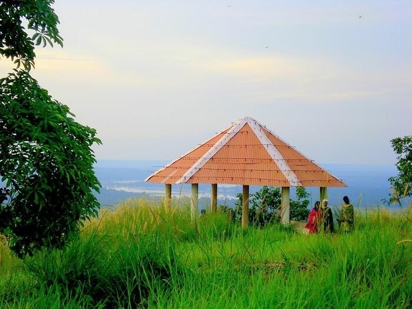
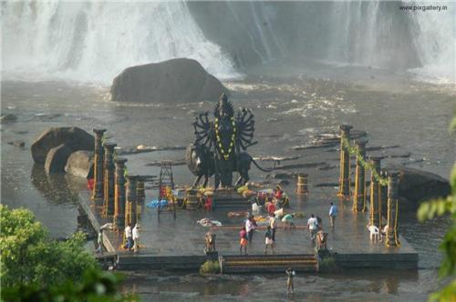
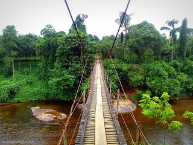
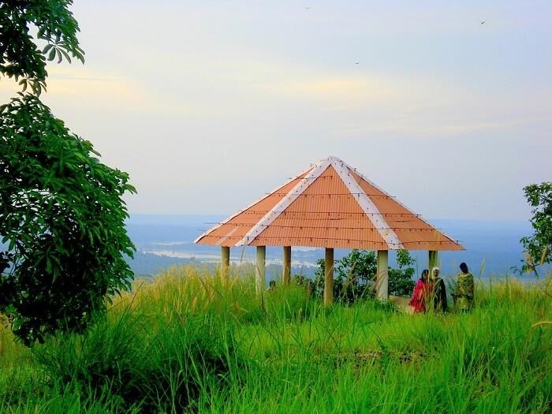
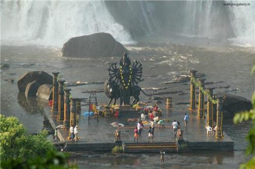
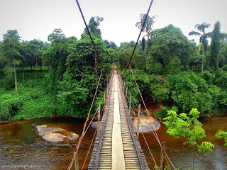
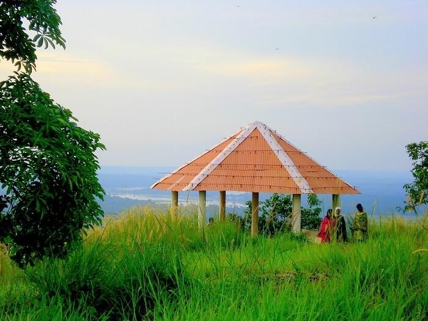

TOP DESTINATIONS
 





Thrissur district was formed on July 1, 1949, with the headquarters at Thrissur City. Thrissur is known as the cultural capital of Kerala, and the land of Poorams. The district is famous for its ancient temples, churches, and mosques. Thrissur Pooram is the most colourful and spectacular temple festival in Kerala.
Thrissur ((About this soundpronunciation (help·info)), also known by its former name Trichur) is a city and headquarters of the Thrissur district in Kerala, India.It is also known as gods own town , it is famous for pooram festival, one of the most celebrated festival in the world It is the third largest urban agglomeration in Kerala after Kochi and Calicut urban areas and the 20th largest in India.[3][4] Thrissur is also known as the "cultural capital of Kerala" because of its cultural, spiritual and religious leanings throughout history.[5] The city is built around a 65-acre (26 ha) hillock called the Thekkinkadu Maidan which seats the Vadakkumnathan temple. Thrissur was once the capital of the Kingdom of Cochin. It is located 268 kilometres (167 mi) towards north-west of the state capital city Trivandrum. One of the main cultural events in Thrissur is the Thrissur Pooram, which attracts quite a number of tourists and travellers.[6]


